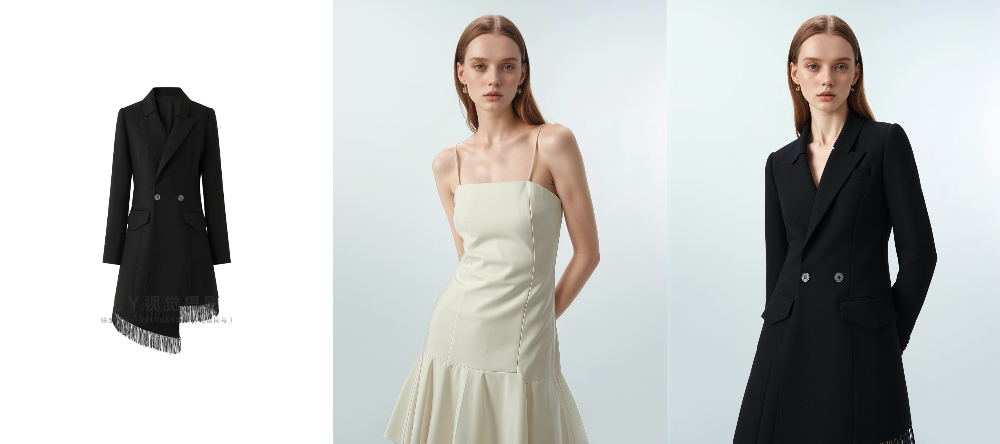
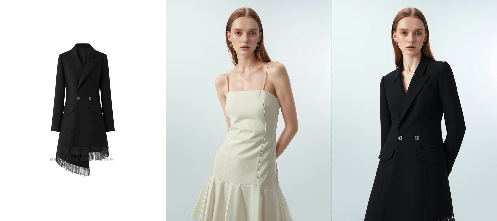
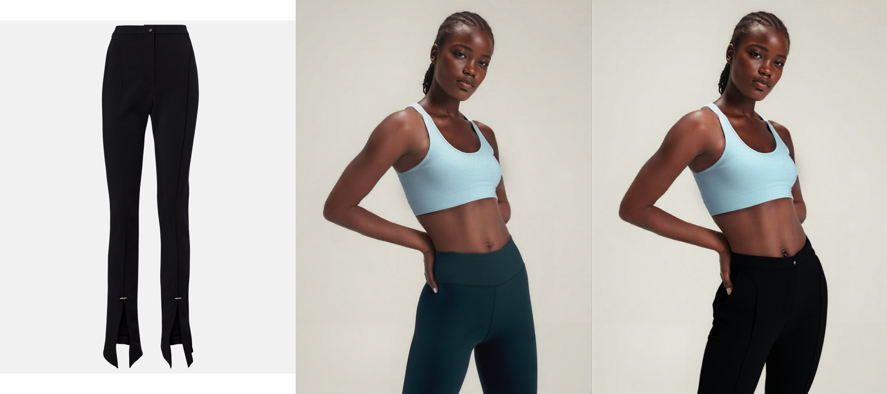
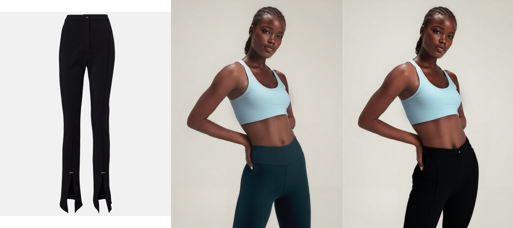
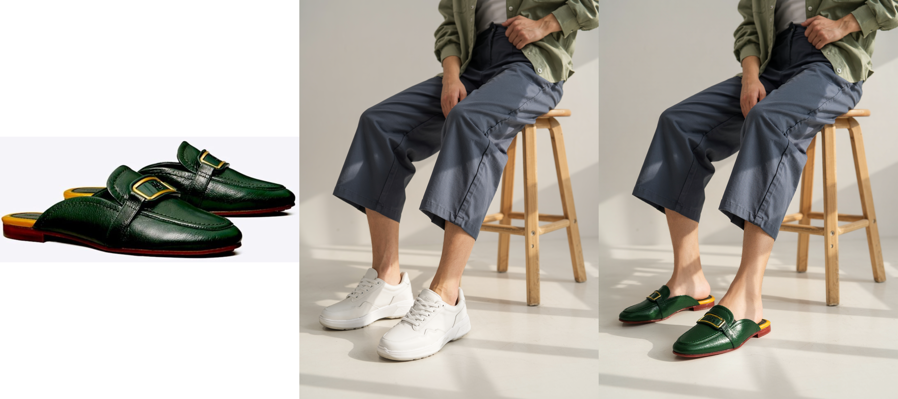
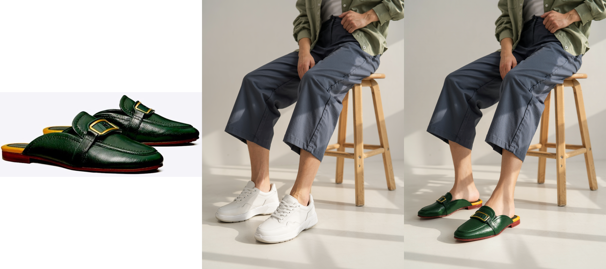

Virtual try-on (VTON) has advanced significantly due to generative models, but existing methods remain limited by static, single-pass pipelines that lack iterative refinement, resulting in fragmented textures, color mismatches, and inaccurate garment geometry. This static nature sharply contrasts with real-world fashion interactions, where users naturally engage in multi-turn dialogues to iteratively refine garment selection and fit.
To bridge this gap, we introduce FitTalk, the first benchmark and framework explicitly designed for multi-turn interactive virtual try-on. FitTalk enables iterative garment refinement through natural language dialogue, closely mimicking realistic user-stylist interactions. Our primary contributions include: (1) constructing a large-scale dataset comprising 100,000 interactive try-on dialogues across 15 diverse garment and footwear categories, annotated with detailed refinement instructions and visual artifacts; (2) developing a unified multi-modal conditioning mechanism that integrates garment visuals, textual instructions, and prior dialogue contexts to support coherent, user-guided refinement; and (3) proposing an iterative multi-round training protocol that progressively enriches the model's refinement capabilities by leveraging high-quality, model-generated dialogue examples.
Comprehensive evaluations demonstrate that FitTalk significantly outperforms traditional single-turn VTON baselines in both quantitative metrics and qualitative assessments via human preference studies. We also introduce FitMetric, an automated metric leveraging GPT-4 for efficiently evaluating multi-turn refinement quality in terms of garment alignment, color consistency, and identity preservation. By introducing iterative user interactions into the virtual try-on paradigm, FitTalk sets a new standard for interactive fashion generation. We release our dataset and implementation to facilitate future research in interactive, user-centric garment generation.


 



 



 
